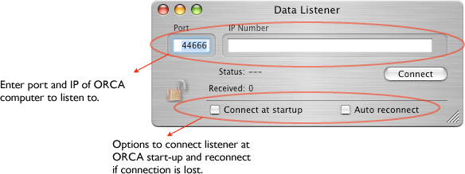

The Listener connects to a BSD socket object (the Data Broadcaster) on another comuter running ORCA and receives the raw data stream. The data stream is exactly the same as the data put on disk. If the Listener connects in the middle of a run it will receive the data header and all data put into the data stream after connecting. All previous data will not be received. The Listener icon in the configuration window looks like this:

The only setup for the dispatcher is to pick a port number and IP of the computer to connect to for data. It can also be configured to connect automatically at start-up and reconnect if the connection is lost.